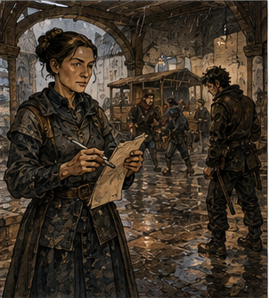
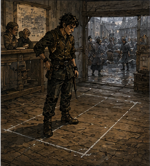

The yard was still mud. Not wet dirt. Mud. There was a difference, and Jorren made me demonstrate it by stepping into the guild yard, planting my right foot, and nearly sitting down without permission. He watched from beneath the arcade.
“Good,” he said.
“I learned nothing.”
“You learned the yard is mud.”
“I knew that before I stepped in.”
“Then why did you step in?”
I looked at my boot.
“That is becoming an uncomfortable pattern.”
Alden arrived ten minutes later and did exactly the same thing. He recovered better. I resented him for it. Jorren pointed at both of us.
“No distance work,” Jorren said.
Alden looked across the yard.
“It’s not that bad,” Alden said.
Jorren pointed at the far fence, where one of the practice dummies had fallen face-first into a brown puddle. Alden considered.
“Could be worse,” Alden said.
“No,” Jorren said.
I said, “I have another exercise.” Jorren looked suspicious.
“Does it involve magic?”
“No.”
“Jumping?”
“No.”
“Fire?”
“No.”
“Why did you pause?”
“I was offended by the question.”
Alden said, “Coins.” Jorren looked at him.
“He showed me yesterday,” Alden said.
“I showed you nothing,” I said.
“You slapped my hand,” Alden said.
“That was instruction,” I said.
“That was assault,” Alden said.
“Bronze guild standards are broad,” I said.
Jorren rubbed his face.
“Where?” he asked.
That was the problem. The covered arcade was busy. Rain had delayed enough contracts that half the guild seemed to be waiting under it, arguing with clerks, checking postings, drying equipment, or lying about how much rain they had walked through. The indoor practice room was booked by a shield class. The covered loading yard had carts in it.
The horse court was stone and currently occupied by horses, which felt administratively difficult. I had spent twenty minutes discovering that weather did not merely cancel plans. It made everybody else need the alternatives too.
“Somewhere covered,” I said.
Jorren stared.
“Excellent.”
“I am still narrowing it.”
Alden leaned against a pillar.
“What do we actually need?”
“Space.”
“How much?”
I paused. Jorren smiled. I hated him.
“Not much.”
“How much?”
“Ten feet.”
“Wide?”
“Five.”
Alden looked around the crowded arcade.
“That’s tiny.”
“Yes.”
“So why are we standing here?”
Because I had been looking for a training space. Not ten feet by five. A training space had requirements. Clear floor. Permission. Appropriate surface. No traffic. Enough room for movement. Ideally equipment. Possibly a fee. Ten feet by five had different requirements. This was irritating. Jorren said, “You keep doing that.”
“I know,” I said.
Alden said, “Doing what?”
“Making the problem bigger because he likes the bigger problem,” Jorren said.
“I do not like bigger problems,” I said.
Jorren and Alden looked at me.
“Fine. I like interesting problems.”
“That one wasn’t interesting,” Jorren said. “You made it interesting.”
That was worse. The ink-thumbed clerk appeared in the guild doorway holding three sheets of paper. I intercepted her.
“I need ten feet of covered floor for about an hour.”
She stopped.
“For what?”
“Covered. Five feet wide. For perhaps an hour.”
Her eyes narrowed.
“Why?”
“Training.”
“No.”
“You don’t have ten feet?”
“We have many ten feet.”
“Excellent.”
“None are yours.”
Alden laughed behind me. I ignored him.
“Who has covered space nearby?”
“No.”
“That was not a request for guild property.”
“That makes it worse.”
“Why?”
“Because now you want me to help you bother someone else.”
“Yes.”
She stared at me. Then she looked at Jorren. He raised both hands.
“I’m not with him.”
“You trained him.”
“Regrettably.”
She looked at Alden. He pointed at me.
“His idea.”
Cowards. The clerk sighed.
“Freight office on East Market.”
“What?”
“East Market Freight Cooperative. They manage three covered loading sheds and two storage courts. Weather has half their routes delayed, so they may have space.”
“That sounds perfect.”
“It sounds busy.”
“Who do I ask?”
She smiled. I should have been afraid.
“Octavia Orin.”
“What is she like?”
The clerk’s smile widened.
“Helpful.”
I looked at Jorren. He looked away. This was a trap. I went anyway. Jorren did not. He had work. Alden did not either, because the guild found him a replacement escort that had not drowned.
That left me walking alone through streets still wet from yesterday’s rain, carrying four coppers, two wooden practice coins, and a growing suspicion that the ink-thumbed clerk had sent me to a murderer. East Market Freight Cooperative occupied a long brick building beside a paved court. The paving was the first thing I noticed. Not because it was impressive.
Because after two days of mud, flat stone looked like civilization. Three covered sheds opened onto the court. Carts stood beneath two. Men and women moved crates under the third while someone shouted numbers. A narrow office sat at the building’s front. Inside were shelves. Not decorative shelves. Useful shelves.
Ledgers by year. Route tags by color. Bundles of tied receipts. Hooks with keys. A board covered in chalk marks. Three clocks, none showing exactly the same time. Behind a high desk stood a woman about my age. Maybe twenty. Maybe twenty-two.
Dark brown hair pinned tightly at the back of her head. Plain gray dress. Brown vest. Sleeves rolled exactly twice. No jewelry except a small brass pin at the collar. She was writing. I waited. She kept writing. I waited longer. She turned a page.
“Excuse me.”
“One moment.”
I had already given her several. She finished the line. Dipped the pen. Added a number in the margin. Blotted it. Closed the ledger. Then she looked at me.
“Yes?”
“Octavia Orin?”
“Yes.”
“I’m Greg. The guild sent me.”
She set her pen beside the ledger.
“What do you need, and when?”
I looked at my hand. I had not realized I was holding the coin.
“That could describe many adventurers.”
“Yes.”
I liked her less immediately. Excellent.
“I need ten feet by five.”
“When?”
“Tomorrow morning. About an hour.”
“Covered?”
“Yes.”
“Exclusive access? Weapons? Storage? Anything that can damage the floor?”
I looked at her.
“Training. Two people. No weapons. No storage.”
I opened my mouth. She held up one finger.
“You also did not ask whether we rent space.”
“Do you?”
“No.”
I closed my mouth. She reopened the ledger. The conversation appeared to be over. I stood there. She wrote another line.
“Octavia.”
She looked up.
“I need a covered area at least ten feet long and five feet wide for approximately one hour tomorrow morning. Two people will use it for a low-speed training exercise. No weapons. No fire. No magic.”
I hesitated.
“Probably.”
Her expression changed.
“Remove probably.”
“No magic.”
“Will you damage the floor?”
“No.”
“Will you interfere with traffic?”
“Not intentionally.”
“No.”
“Fine. We will not interfere with traffic.”
“Do you require privacy?”
“No.”
“Storage?”
“No.”
“Furniture?”
“No.”
“Then you do not need a room.”
“I know.”
“Do you?”
I disliked her.
“I need a covered strip of floor.”
“Better.”
She turned toward the chalk board. Three columns listed departures. North. West. South. Half the entries had been crossed out and rewritten. Weather. I recognized the shape now. Yesterday’s rain was still moving through today.
Routes delayed meant carts delayed. Carts delayed meant loading bays changed. Drivers arrived at the wrong times. Goods waited. Storage changed. Space became temporarily available in one place and urgently needed in another. Octavia studied the board.
“Tomorrow morning is bad.”
“Why?”
“Because yesterday was wet.”
“I noticed.”
“Did you?”
I ignored that.
“What about afternoon?”
“Worse.”
“Today?”
She looked at me.
“You want the space today.”
“If available.”
“You said tomorrow.”
“Plans changed.”
“No. Your request changed.”
“That feels pedantic.”
“It is literally my job.”
I looked at the board.
“What is your job?”
“Keeping other people’s poor planning from becoming freight.”
“That was almost funny.”
“It was not.”
Of course it was not. She moved two chalk marks.
“Third shed. Rear strip. Today between second and third afternoon bell.”
I blinked.
“You have space?”
“I have a cart from North Gate that will not arrive until after third bell because the west approach washed out.”
“So the space is free.”
“Until third bell. Then a North Gate cart owns that strip whether you are finished or not.”
“Temporarily unused.”
“Exactly.”
“Do I pay?”
“No.”
“Then it is extremely what free means.”
She stared at me. I decided not to die over vocabulary.
“What do you want?”
“Nothing.”
That made me suspicious.
“Why?”
“Because I am not renting you the shed.”
“What are you doing?”
“Allowing you to stand in an unused strip for one hour if you stay out of the loaders’ way.”
“That sounds like renting without money.”
“It sounds like you standing somewhere.”
“Fine.”
She opened a drawer. Removed a small square of blue-painted wood. Wrote a three on it. Handed it to me.
“Show that to Daro at the third shed.”
I took it.
“That was easy.”
“No. It took you twelve minutes to ask for ten feet of floor.”
I looked at the clocks. She was right. That was offensive.
“Thank you.”
“You’re welcome.”
I should have left. Instead I looked at the route board again. One line had been erased so many times that the wood beneath the chalk had gone pale.
“South routes are bad?”
“Some.”
“Canal?”
“Some.”
“Because of flooding?”
“Because water makes roads wet.”
I looked at her. She looked back.
“You’re enjoying this.”
“No.”
She absolutely was.
“What happens when a route slips a day?”
“Which route?”
“Any.”
“There is no any.”
That stopped me. She pointed at the board.
“Food spoils differently than nails. Medicine matters differently than furniture. A passenger can choose to wait. A cow can decide for everyone. A courier may go around. A wagon may not fit the road around. A driver can work late. A horse cannot read a schedule.”
I smiled.
“What?”
“That was good.”
“It was ordinary.”
Antonius had said the same thing. I was beginning to suspect ordinary people were secretly competent. This could become a problem. I looked through the office window. Two workers were shifting crates from one cart to another.
“Why move those?”
“Wrong cart.”
“How?”
“Because someone read a seven as a one.”
I looked back at her.
“Really?”
“Yes.”
“That’s all?”
“What were you hoping for?”
“Smuggling.”
“No.”
“Secret guild feud.”
“No.”
“Cursed cargo.”
“No.”
“Disappointing.”
“Most errors are.”
She returned to her ledger. I watched the workers. The crates were nearly identical. One cart had a red mark on the rear rail. The other had blue.
“What’s in them?”
“Lamp wicks.”
I laughed. Octavia looked up.
“What?”
“Nothing.”
“You keep saying that.”
“People keep noticing.”
“Then perhaps stop saying it.”
I leaned against the desk. She looked at my arm. I stopped leaning. This city was becoming coordinated against me.
“What does the blue tag mean?”
“South local.”
“Red?”
“North road.”
“Green?”
“West.”
“Yellow?”
“Priority.”
“Black?”
“Do not load.”
“Why?”
“Depends.”
I smiled. There it was. A boring, useful system built because people made mistakes.
“Who designed it?”
“People.”
“That is evasive.”
“It changed over time.”
“Who changed it last?”
“I changed the black tag.”
“Why?”
“Because ‘hold’ and ‘problem’ used to use the same mark.”
“That seems bad.”
“It was.”
“What happened?”
“A crate of glass went to Hill Road with a broken axle.”
I waited.
“That’s it?”
“It broke more.”
I laughed again. Octavia did not. She wrote something.
“What are you writing?”
“Nothing.”
“That’s my line.”
“I’m working.”
I should leave. I did not. There was something profoundly annoying about watching a person solve exactly the problem in front of her without turning it into a philosophy. I wanted to understand how she did it. Possibly unhealthy.
“Do you ever change the whole system?”
“No.”
“Never?”
“Sometimes.”
“When?”
“When the whole system is the problem.”
“That is circular.”
“No.”
I waited for more. None came.
“You’re difficult to talk to.”
“I am working.”
“Do you like working?”
“Yes.”
That answer arrived too quickly to be defensive. I looked around the office. The ledgers. The tags. The clocks. The chalk.
“You like this.”
“Yes.”
“Why?”
She frowned.
“Why do you like whatever it is you do?”
I almost answered magic. Then support. Then adventuring. Then being right. Then making systems work. Then making people work. Too many answers.
“I asked first.”
“I like when things arrive where they are supposed to.”
“That’s it?”
“Yes.”
A crate started somewhere. It should end somewhere. Octavia Orin wanted that to happen. I found that strangely difficult to argue with. Outside, someone shouted, “Orin!” Octavia turned toward the window. A driver stood in the court holding a soaked paper.
“Which Orin?” she called.
“Yours!”
“That does not answer the question.”
He held the paper higher.
“Your brother’s route!”
Something in her face changed. Not much. Annoyance sharpened into a more specific annoyance. She left the desk. I followed. She stopped at the office door.
“Why?”
“I’m going to the third shed.”
“That is the other direction.”
“I can take the long way.”
“No.”
I went to the third shed. Slowly. The driver met Octavia in the court.

I could hear them. Not because I was listening. Because he was loud.
“South ridge courier didn’t come through.”
“Which courier?”
“Sevren.”
Octavia closed her eyes. Just once.
“Why?”
“Bridge marker says water’s over the lower stones.”
“Then he waited.”
The driver hesitated. Octavia opened her eyes.
“He waited.”
“Probably.”
“That is not the same word.”
I stopped walking. Interesting. The driver said, “He knows the ridge.”
“That was not my question.”
“He might have taken the upper path.”
Octavia’s expression became very still.
“Why would he do that?”
The driver looked uncomfortable.
“He’s Sevren.”
Octavia stared at him. That was apparently an explanation. I liked him already. This was premature.
“Your brother?” I asked.
Octavia turned. I had been caught standing nowhere near the third shed.
“My twin.”
Ah. I looked at her. Straight hair. Straight posture. Straight lines of chalk. Then toward the road beyond the freight court, where some unseen man named Sevren had apparently looked at floodwater and possibly decided the correct response was a worse road.
“Identical?”
“No.”
“Good.”
“Why?”
“No reason.”
Octavia pointed at the third shed.
“Your ten feet.”

I went. Daro was a broad man with a beard and no interest in my existence. The blue tag worked. At the rear of the shed, between a stack of empty crates and a chalk line on the floor, I found twelve feet by six. Perfect. Annoyingly perfect. I stood in it. No mud. Roof. No traffic.
Enough space for two people to make decisions without pretending they needed a training yard. Octavia had solved it in twelve minutes. Most of those minutes had been me. I looked back across the court.
She was still talking to the driver, not panicked or dramatic. She asked questions. Where had Sevren last checked in? What time? What was he carrying? Which horse? Had the ridge post been warned? Had anyone come down from the upper path? She wrote answers on the wet paper. The driver started offering reassurance. She cut him off.
“I do not need you to tell me he is probably fine. I need to know whether I need to move his deliveries.”
That was mean. Also correct. Maybe. I watched her for another moment. Then I stopped. Not my brother. Not my route. Not my problem. I had ten feet of floor. That was enough. For once, I intended to use exactly that much.